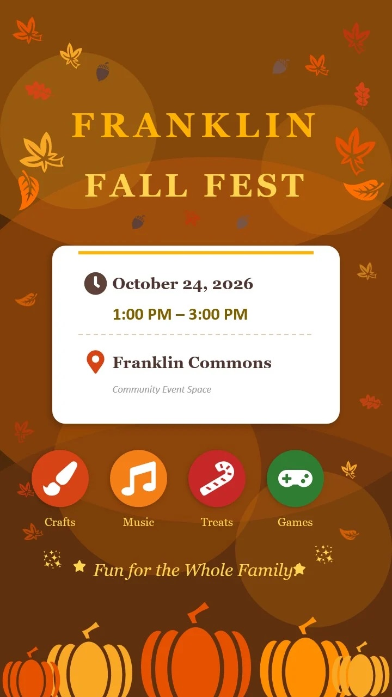
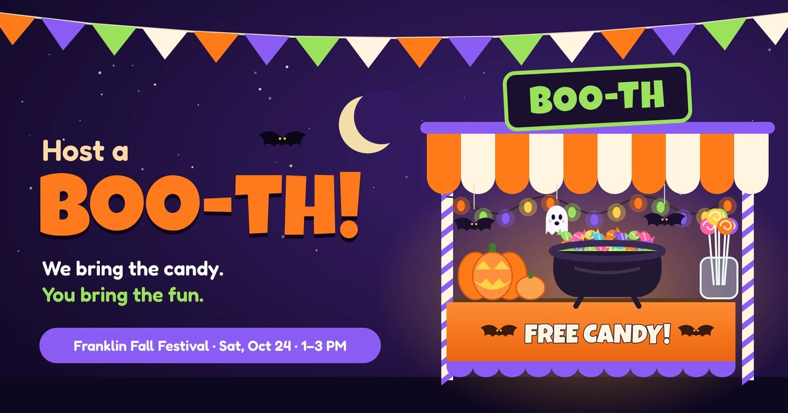
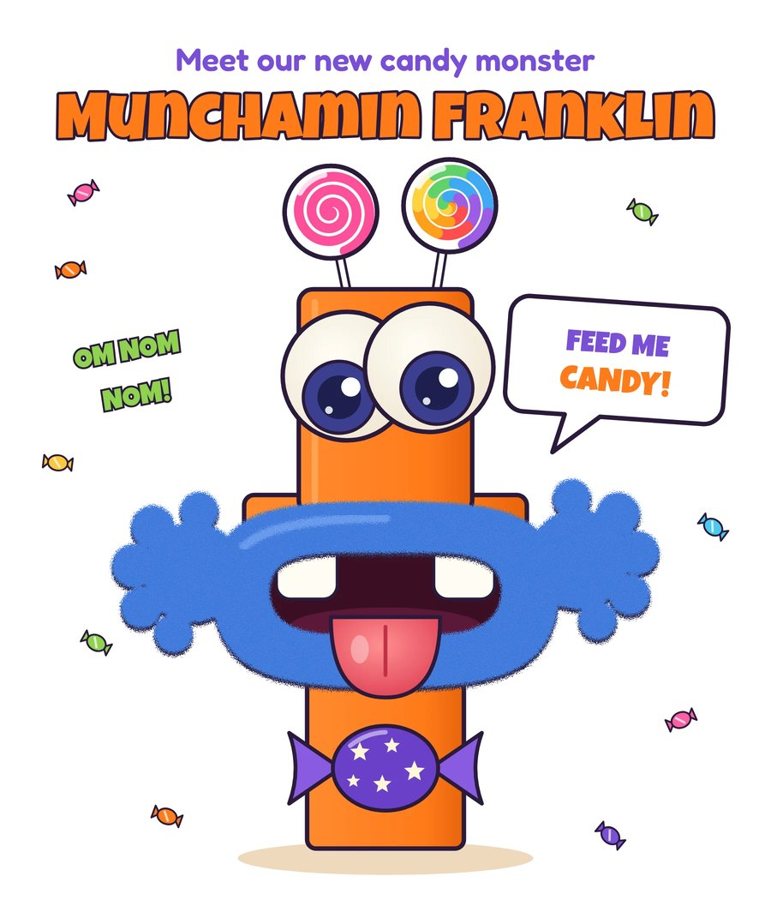

Franklin Fall Fest — Saturday, October 24, 2026

Get your costumes on and join us for Ben Franklin's first-ever Fall Festival!
Event Details
- When: Saturday, October 24, 2026, 1:00–3:00 p.m.
- Where: Indoors at Ben Franklin Elementary (Franklin Commons) — rain or shine, the party is on!
- Admission: FREE
What to Expect
Stroll the Trick-or-Treat Boo-levard, then enjoy:
- 🎮 Ghoulish games
- 🎨 Creepy crafts
- 🕺 A groovy graveyard dance party
- 📸 A fall photo booth
- 🎃 Spooky decorations
- 🦸 The kids' costume parade at 2:00 p.m.
This year we're transitioning from our annual Trunk or Treat event to the all-new Franklin Fall Fest, with even more fun for the whole family.
Please note: as with all PTA events, this is not a drop-off event. Children must be with an adult at all times.
Host a Boo-th

Boo-ths are the heart of the festival. Every boo-th is another stop on the Boo-levard, and right now our Boo-levard is looking a little short!
Hosting is easy, and you don't need a car or carpentry skills. We supply all the treats. You bring a table's worth of fun: spooky, silly, sparkly, or totally over the top. Throw on a tablecloth, add some decorations, put on your best costume, and get ready for a parade of tiny witches, superheroes, and dinosaurs who think you're the best thing that's happened all week.
Team up with friends, neighbors, your child's class, or your sports team. Kids and families will vote for their favorite boo-ths, and the top three win prizes!
Sign up to host a boo-th by Tuesday, October 20.
Volunteer at the Festival
Help with set-up, clean-up, crafts, games, concessions, and more!
Feed Munchamin Franklin

Meet Munchamin Franklin, our brand-new candy monster! You'll find Munch at the school's front entrance, hungry for individually wrapped candy and small prizes, now through Friday, October 23. Munch eats chocolate. Munch eats gummies. Munch eats lollipops (maybe the stick too). Munch is NOT picky.
Questions?
Contact event chair Marisan Bernard at marisanb@mybenfranklinpta.org.